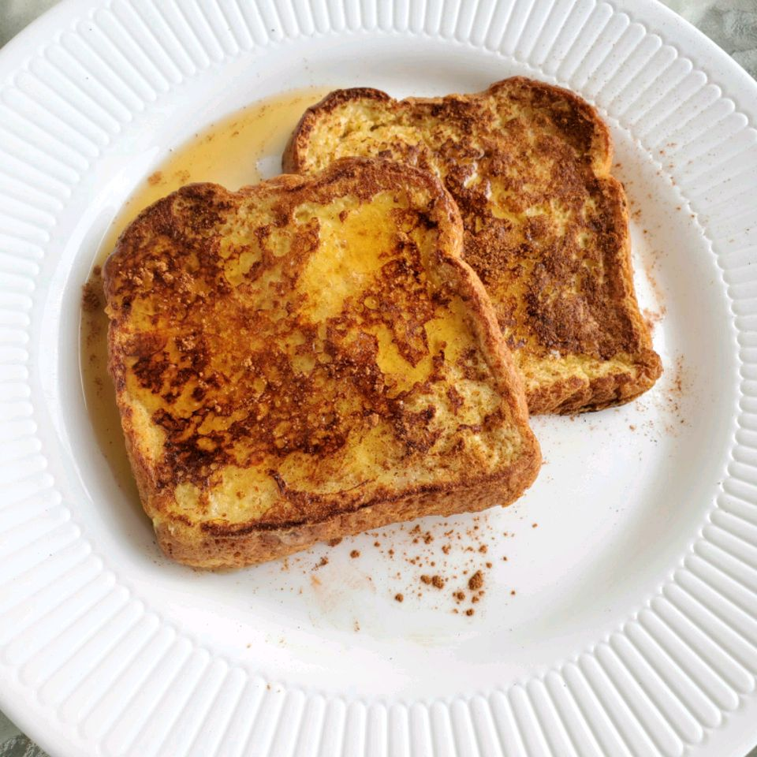

My French Toast

Description
This is my favourite thing to eat for breakfast.
It's easy to make and yummy.
Ingredients
- 2 xxl eggs
- 2 tablespoons butter
- 4 slices of your favourite bread
- 1/4 cup milk
- 2 tablespoons of sugar
- Honey
Steps
- In a bowl, whisk together your eggs, milk and sugar.
- Dip each slice of bread into the mixture, making sure both sides are thoroughly coated.
- Heat the butter in a pan over medium heat.
- Add the coated bread slices and cook until each side turns a golden brown.
- Serve with honey.